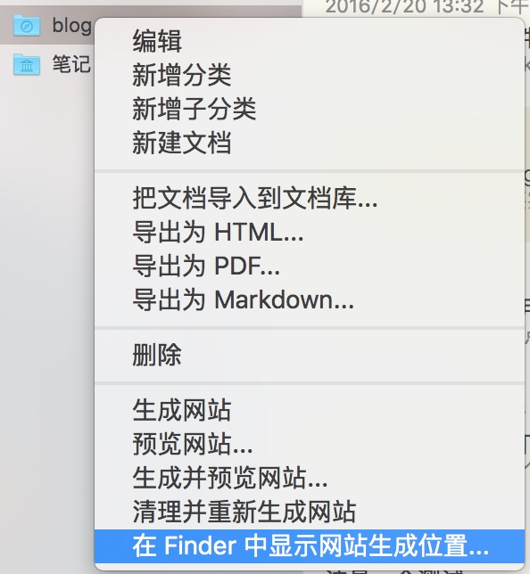
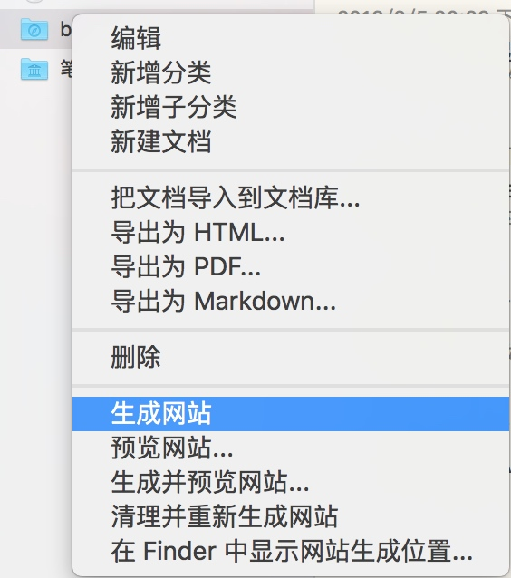
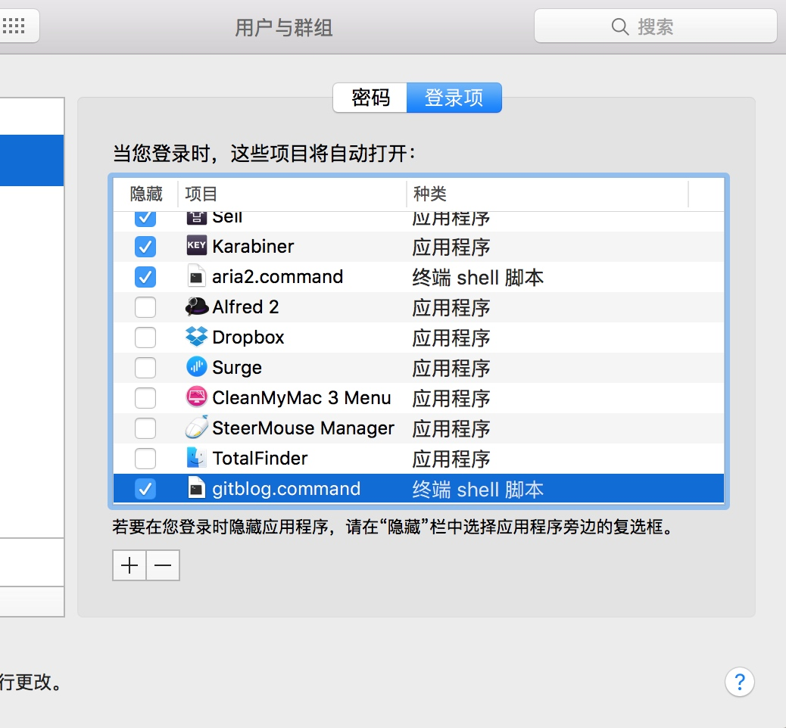

理论上你有什么需要实时提交的 git repo 都可以使用这个方法，但为了节约，你需要设置 fswatch 的间隔时间
虽然我下面使用进行的时候使用的是 MyWeb ，其实你也可以换成其他的 Markdown 工具，效果应该差不多，只是 MyWeb 实在是方便。
敝人乃懒人一枚，很久前购买了 myweb ，用来记点纯文本的笔记，偶尔发个 blog 到 github pages (github.io)。但是 myweb 是个 GUI 工具，发布到 github要换到 iTerm里自己输入命令 git add && git commit ，非常的麻烦，所以就又一次偷懒写了一个烂脚本，原则上适合用于所有的 app 自动发布到 GitHub。
首先， 确认你要发布的目录
我的 mweb 发布到 Github 的文件夹是 blog，如下图所示：

先在 blog 这个目录上右击生成网站，然后再点如下图所示，找到生成网站的位置：

然后生成的网站目录在 /Users/bao3/Library/Containers/com.coderforart.MWeb/Data/Documents/MWeb/LocalData/Site/blog/，所以我的目标就是每次文件有变化时，就自动将文章发布到 github ，记住，重点是 “有变化时” 实时更新。
其次,安装自动发布工具
我们需要用到 fswatch 这个命令，这需要使用brew install fswatch
可选的一个 Shell 命令是 Proxychains4-ng，这个东西的主要用途是为 git 命令添加代理，以防止网络质量不佳。要使用这个命令就需要有一个 Socks 代理，如果你没有，就不要安装了，而我自己有一个shadowsocks-libev ，所以非常方便。
脚本主体
我不是个程序员，所以写出来的脚本有点“脏”，好在还能用，自己动手丰衣足食嘛；然后开始写我们的脚本吧：
找一个目录存放这个脚本，比如自己的 "/Users/`whoami`/ "下面，文件名字叫 gitblog.command ，重点是一定要是 *.command 这种结尾，后面有重要用途。
#!/bin/bash
#$wdir is where your github blog dir
wdir=/Users/bao3/Library/Containers/com.coderforart.MWeb/Data/Documents/MWeb/LocalData/Site/blog/
export cmd=/usr/bin/git
#locate the 'fswatch' command ,you should install it via "brew install fswatch"
export fsdog=`which fswatch`
export proxy=`which proxychains4`
args="-0 -a $wdir/atom.xml"
function gitpush() {
$cmd add . ;
reslut=$($cmd commit -a -m "`date`" | grep nothing)
#when get $result length == zero ,means that there is new modified blog ,just git push in next!
if [ -z `$reslut` ] ; then
#Note : proxychains4 is a proxy tools which would let "git " use your proxy ( shadowsocks e.g.),just brew install it OR it would skip auto.
`$proxy -q $cmd push -q` || `$cmd push -q`
fi;
return 0;
}
cd $wdir;
#gitpush ;
export -f gitpush;
$fsdog $args | xargs -0 -n1 bash -c 'gitpush' &
exit
这段脚本实现的功能如下：
- 使用
fswatch实时 检测 myweb 的 blog 目录 - 一旦发现有新的博客文章，则会自动提交，并添加当时的时间为标记
- 提交时会优先使用
Proxychains4通过代理提交，如果没安装则自动使用 Git push 提交 - 只有变化的文章才会提交，所以非常省流量
- 每次你写完博客，只需要在 Myweb 里点 下面的菜单

开机启动
在做这一步前，请先双击刚刚生成的 gitblog.command ，应该可以启动一个黑窗口然后又消失了。
接着，你打开 Terminal 输入下面的命令
$ ps waux | grep git | grep -v grep
bao3 20410 4:43下午 0:00.01 xargs -0 -n1 bash -c gitpush
这表示成功启动了。但如果没有，则表示你没有配置成功，多半是里面有什么特殊符号少了半边或者路径错了什么的，需要你自己调试了。
接下来就是在“系统偏好设置”里的“用户和群组”，加上 gitblog.command 的开机登录选项。

至此，已经全部完成，每次对你的 blog 有任何更改，全都会自动更新到 github 上，非常方便。
请你一定注意，在 MyWeb 里设置备份哟